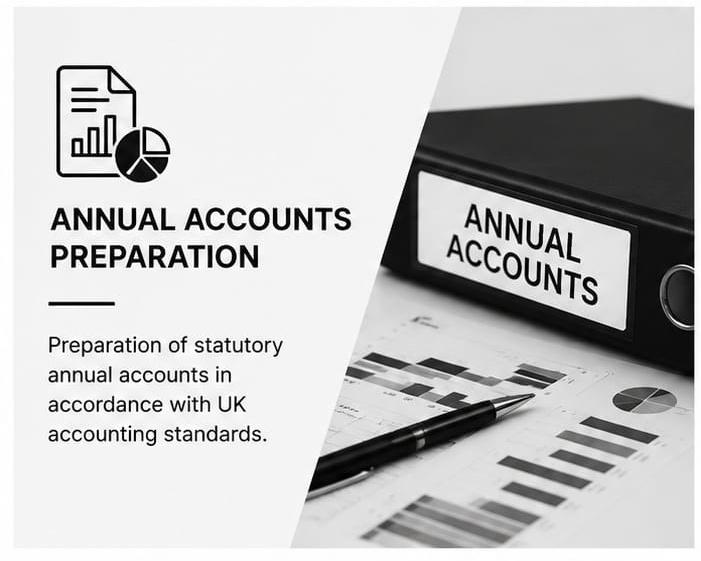
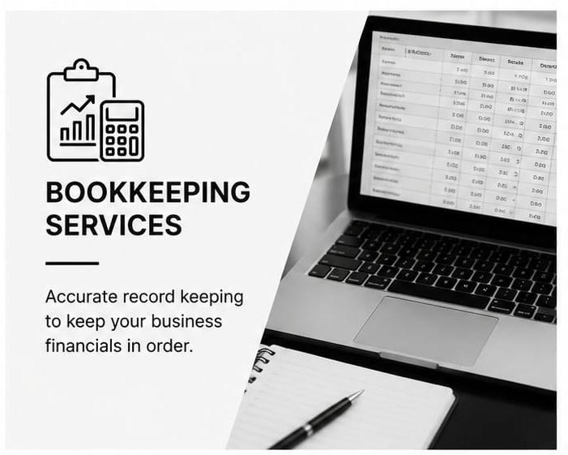
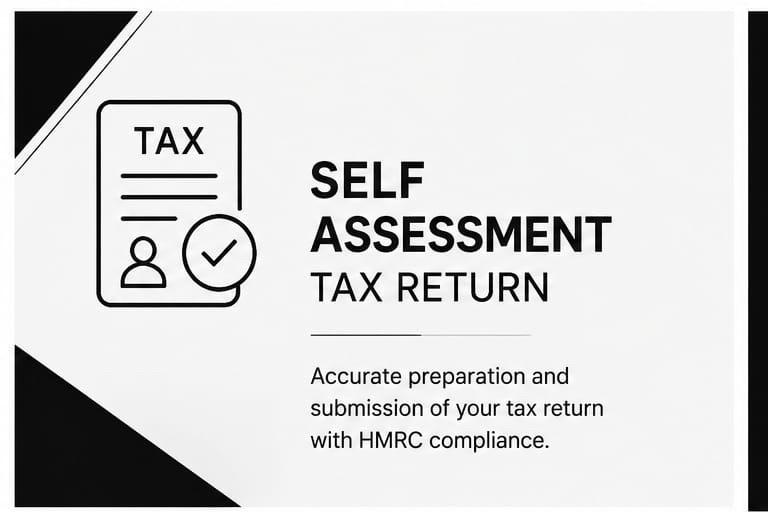
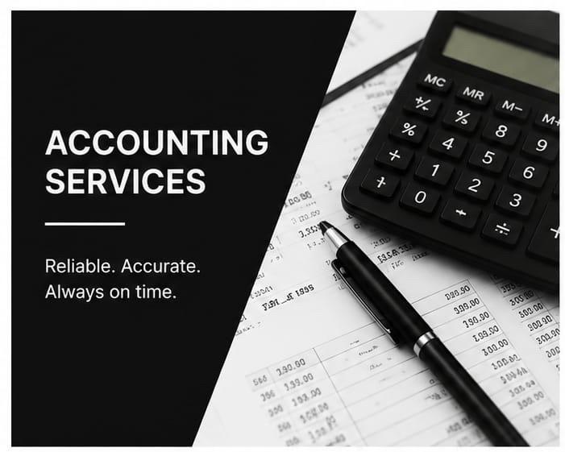
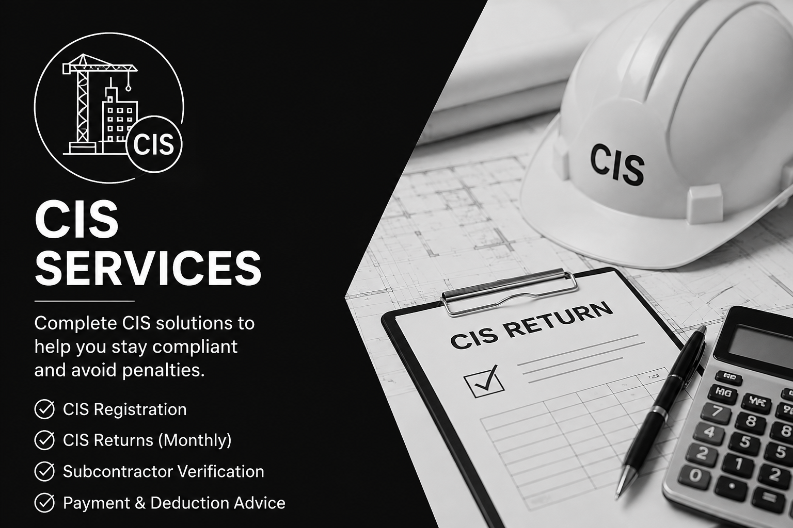

✓
Stay Compliant
Avoid penalties, meet every deadline and stay on top of HMRC regulations.
Managing your finances effectively is essential for the success and growth of your business. At Accountancy Chamber, we provide reliable and accurate accounting services tailored to the needs of sole traders, limited companies, partnerships, and growing SMEs across the UK.
Avoid penalties, meet every deadline and stay on top of HMRC regulations.
Gain clear financial insight and expert guidance.
We handle the numbers and paperwork so you can focus on running your business.
Comprehensive financial solutions tailored to your business





Our Expertise in SMEs
At Accountancy Chamber, we help businesses and individuals across the UK stay on top of their finances with a complete range of accountancy services. From annual accounts, tax returns, and VAT submissions to bookkeeping, payroll management, and self-assessments, we provide tailored solutions designed to meet your needs.
Our approach goes beyond simply handling your accounts. We offer proactive guidance, responsive support, and modern accounting expertise to help you make informed financial decisions. While you concentrate on running your business, we'll ensure your accounting and tax obligations are managed efficiently. And if you're feeling overlooked by your current accountant, we're ready to provide the service and attention you deserve.
Whether you're a freelancer, contractor, consultant, or self-employed professional, we provide tailored accounting and tax support to help you stay compliant and organised. From bookkeeping and self-assessment tax returns to business advice and tax planning, we take care of the finances so you can focus on growing your business.
Running a partnership requires clear financial management and accurate reporting. We support partnership businesses with accounts preparation, tax returns, bookkeeping, VAT, and ongoing advice, helping you stay compliant while achieving your business goals.
At Accountancy Chamber, we help limited companies stay compliant, tax-efficient, and financially organised. From annual accounts and corporation tax returns to bookkeeping, payroll, VAT, and Companies House filings, we provide a complete accounting solution tailored to your business. Our proactive advice and ongoing support allow you to focus on growing your company while we take care of the numbers.
Whether you're a sole trader, partnership, or limited company, Accountancy Chamber delivers end-to-end accounting solutions designed to save you time, reduce stress, and maximise financial efficiency. From everyday bookkeeping to strategic tax advice, we're here to support your success at every stage of your journey.
Qualified accounting professionals providing reliable, accurate and compliant accountancy
Services designed for your specific business needs
Transparent fees with no hidden costs
Cloud-based solutions for modern businesses
Dedicated support for your business
Your financial and personal information is handled with the highest level of confidentiality, care and professionalism.